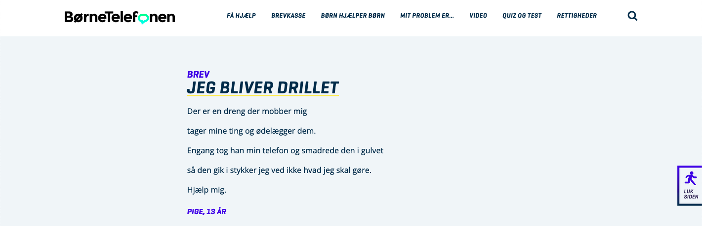

Research
Screenshot of the website boernetelefonen.dk, where children can write letters and then both professionals and other children can answer and support. The website also consists guides and general information about bullying. We've used this website for our qualitative deskresearch.
Deskresearch
In the beginning of our project after we chose the topic of children and bullying we began doing deskresearch about the topic. We were in doubt as to how we could do a research about this sensitive topic without including children. After discussing this problem with our fellow students and among ourselves we found that we could make a pretty good research only researching the internet for informations upon the topic. And as hopes, we quickly found information - both statistics and qualitative data as example the letters from children at boernetelefonen.dk. In this way, we could avoid involving children to extract information from them in an ethnographic research, as it would put them in an uncomftable situation were they would have to upen up to us about this topic.Our most important findings included the following:
- Children in our target group have experienced bullying
- The amount of bullying children experience is as much online as it is offline
- We found several examples where involving parents, teacher, or both did not help the problem
- Children who writes about having problems with bullying are all genders, not either boys or girls
- For 13 years olds 13% of girls and 8% of boys have experienced online bullying
- As children within our target-group gets older, the less they trust their teachers (they then tend to talk to their closest friends, if they have any)
What we take with us from the research is that bullying in our target group is in fact a problem.
Even though there are many initiatives trying to prevent or stop it, it doesn't always help. This
results in some children having to switch schools, this leads to an unsteady childhood that will
have an impact on the individual as an adult.
We also got aware to the gender-issue many
children are struggeling with in their early teens. This is also often the reason for them being
bullied.